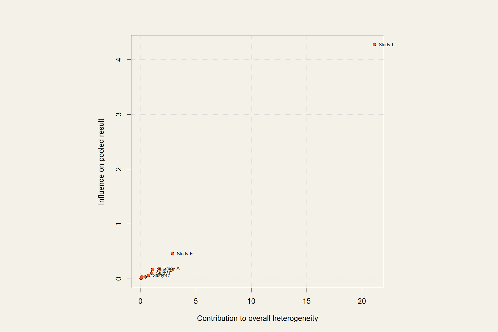

Six Outcomes, One Stable Answer
Two surgical approaches to the same condition, six outcomes to compare them on, and heterogeneity above 80 percent on the outcomes that mattered most.
This one is still under peer review, so the condition and interventions stay masked here. What I can show is the part that made it work: a sensitivity framework built to find out whether the pooled answers were real or the property of one or two studies.
How the problem became a design
Clinical question
Between two approaches, which carries less harm across six binary outcomes?
The evidence
Comparative observational studies across multiple countries, some outcomes wildly heterogeneous
The design
Random-effects models wrapped in a four-layer sensitivity framework
The answer
Pooled estimates whose stability is demonstrated, not assumed; manuscript under review
The decisions that mattered
Hartung-Knapp intervals on every outcome.
With modest study counts, the conventional intervals are too confident. Hartung-Knapp pays the honesty tax up front.
Leave-one-out refits for all six outcomes.
Each pooled estimate was recomputed dropping every study in turn. If a conclusion dies when one study leaves, that is worth knowing before a reviewer finds it.
Baujat plots to name the heterogeneity.
When I-squared passes 80 percent, the useful question is which studies are responsible. The Baujat plot points at them directly: heterogeneity contribution on one axis, influence on the pooled result on the other.
Country subgroups with formal interaction tests.
Practice differs across health systems. Subgrouping with a test for interaction checks whether geography explains the disagreement or just relabels it.
What this looks like

Illustrative Baujat plot from simulated data: the isolated point at top right is the kind of study this diagnostic exists to find. Real figures remain masked until publication.
The core of it, in R
# Random effects with Hartung-Knapp, per outcome
m <- metabin(event.e, n.e, event.c, n.c,
studlab = study, sm = "OR",
method.tau = "DL",
method.random.ci = "HK",
incr = 0.5, allstudies = TRUE)
metainf(m) # leave-one-out stability
baujat(m) # who drives the heterogeneity?
# Subgroups with an interaction test
m_geo <- update(m, subgroup = country)
m_geo$pval.Q.b.random # does geography explain it?Where it landed
The manuscript is under peer review; the clinical details stay masked here until it is out. The framework, six outcomes each carrying their own stability evidence, is the part this page exists to show.